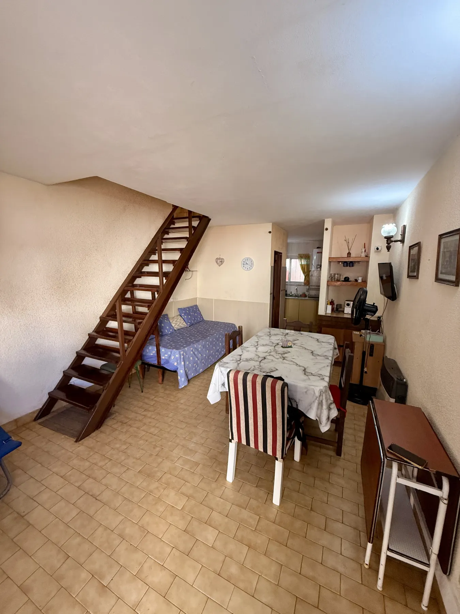

CASITA.BARRIO NORTE
VILLA GESELL · CASA
La casita
Casa de tres ambientes para hasta seis personas, a 200 metros de la playa.
Ver propiedad ↗PROPIEDADES
Casas, departamentos y complejos administrados por Manto en la Costa Atlántica.
Filtrá por localidad.
VILLA GESELL · CASA
Casa de tres ambientes para hasta seis personas, a 200 metros de la playa.
Ver propiedad ↗
VILLA GESELL · COMPLEJO
Complejo para familias a 50 metros del mar, con departamentos equipados y espacios comunes.
Ir al sitio ↗
VILLA GESELL · DEPARTAMENTOS
Dos departamentos para cuatro personas y un monoambiente para dos.
Ir al sitio ↗MAR DEL PLATA
Falta incorporar nombre, fotos, capacidad, servicios y canal de consulta.
Información pendiente
SAN BERNARDO · DÚPLEX
Tres ambientes para seis personas, frente a Plaza del Bosque, con patio y estacionamiento privado.
Ver propiedad ↗No hay propiedades cargadas en esta localidad.